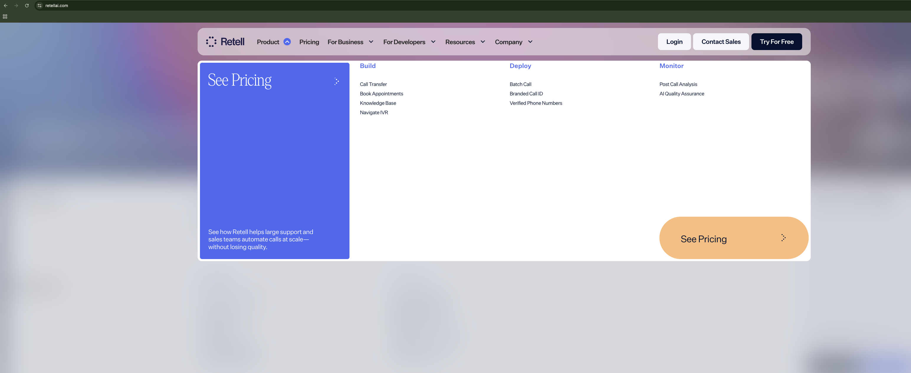
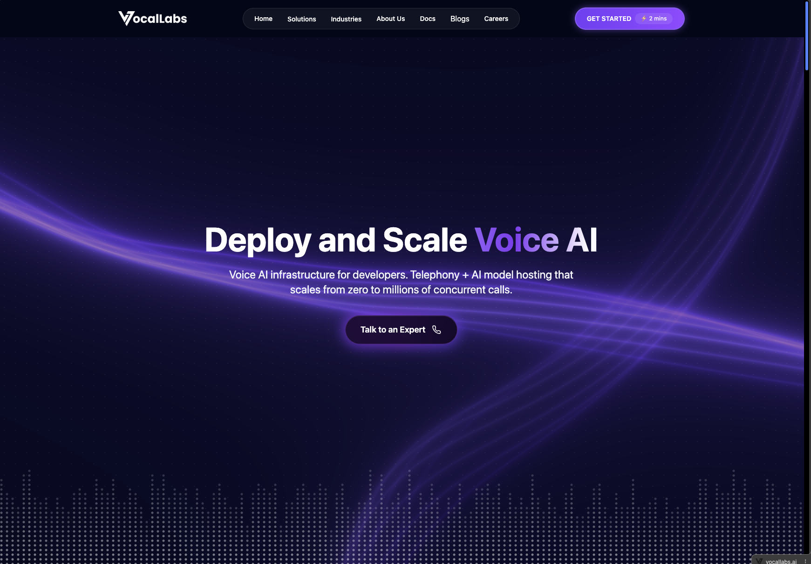
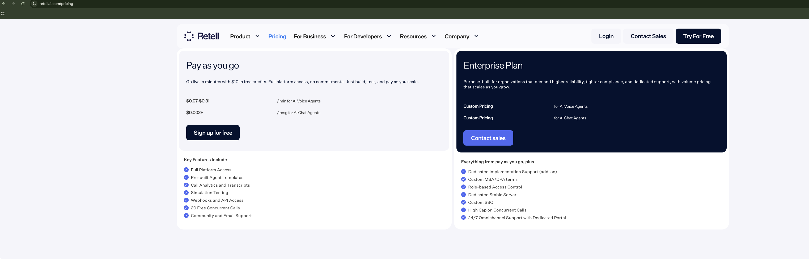
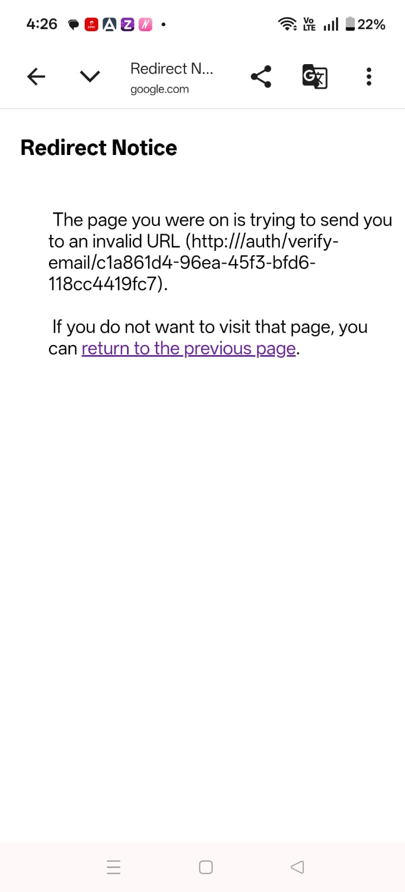
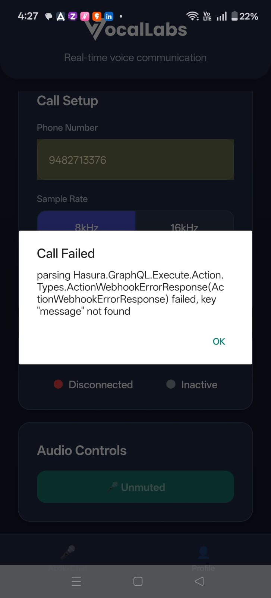
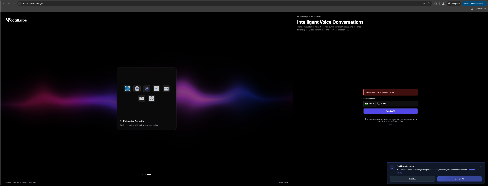
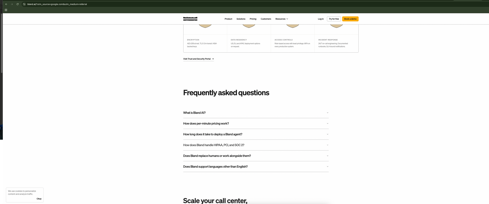

Key Issues & Strategic Recommendations
Insight: VocalLabs positions itself as a Voice AI infrastructure platform but lacks clear ICP segmentation.
Problem: No clear separation between developers and business users.
Impact: Confusion, weak GTM positioning, and lower conversions.
Recommendation:
Create separate journeys for Developers and Businesses with tailored messaging.
Strategic Direction: Position as the "AWS of Voice AI" — combining infrastructure + business applications.
Competitor product screenshot


Insight: Users cannot experience the product due to lack of demo, sandbox, or trial.
Problem: Voice AI is highly experiential and cannot be understood via static pages.
Impact: Low trust, poor activation, and competitor advantage.
Recommendation:
Introduce interactive demo, sandbox environment, and free credits.
Strategic Direction: Optimize for the fastest "time to first AI call experience".
Competitor product screenshot
Competitor product screenshot
Competitor product screenshot
Insight: No pricing page or cost clarity is available.
Problem: Users cannot estimate usage cost or scalability.
Impact: Slower decision-making and reduced inbound conversions.
Recommendation:
Introduce usage-based pricing (per minute/API) with tiered plans.
Strategic Direction: Align with AWS/Twilio-style transparent pricing models.
Competitor product screenshot

Insight: Onboarding flow is broken with input issues, OTP failures, and API errors.
Problem: Product promise (high performance) does not match initial experience.
Impact: Immediate drop-offs and loss of credibility.
Recommendation:
Fix authentication, input UX, error handling, and mobile stability.
Strategic Direction: Reduce time to first successful workflow or API call.



Insight: Lack of FAQs, use cases, and technical education.
Problem: Users do not understand product depth or applications.
Impact: Low trust, high dependency on demos, poor SEO.
Recommendation:
Build use-case library, technical explainers, and FAQs.
Strategic Direction: Position as a thought leader in Voice AI.
Competitor product screenshot

Strong Infrastructure Capability:
VocalLabs offers strong backend capabilities such as low latency, global telephony, and bring-your-own-model support.
Big Opportunity:
These capabilities can be positioned as key differentiators through better messaging and visual storytelling.
Note: This analysis is based on available public information and competitor benchmarking.